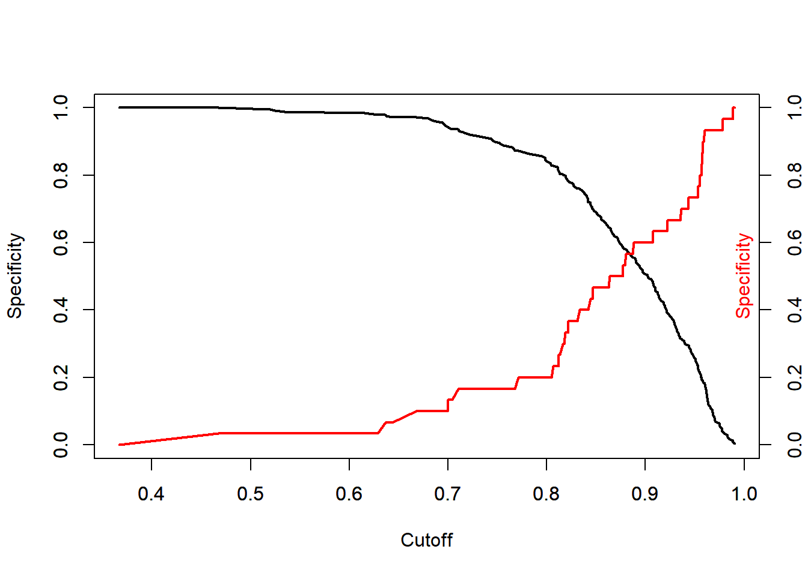
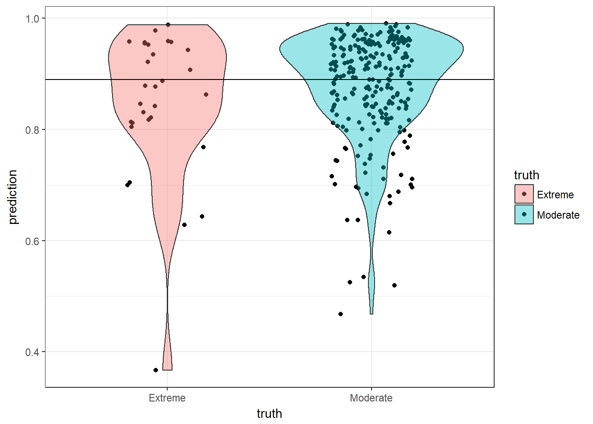

Fake News Project
Mitch Borgert, Jerry Tucay, Aaron Schaffer
Our goal for this project was to look at how different political parties viewed fakes news. Our data set was from the PEW Research center and it contained question such as “How well do you think you can determine a fake news story”. These type of questions are the PEW questions and are at the end of this page. First we looked at how the variables were distributed.
Political Affiliations of Population

Here we looked at political party and political idealology. A few of the responses were odd, with a couple very liberal republicans or very conservative democrats.
Pew Responses

Next we made a graph to look at the distribution of answers for the PEW questions.
Pew questions vs Ideology
## TableGrob (2 x 2) "arrange": 4 grobs
## z cells name grob
## 1 1 (1-1,1-1) arrange gtable[layout]
## 2 2 (1-1,2-2) arrange gtable[layout]
## 3 3 (2-2,1-1) arrange gtable[layout]
## 4 4 (2-2,2-2) arrange gtable[layout]Then we looked at how the PEW questions distributed across idealology.
##
## Call:
## glm(formula = ideo ~ . - ideo, family = "binomial", data = pew2)
##
## Deviance Residuals:
## Min 1Q Median 3Q Max
## -2.6465 0.3175 0.4355 0.5569 1.3968
##
## Coefficients:
## Estimate Std. Error z value Pr(>|z|)
## (Intercept) 1.292990 0.867112 1.491 0.1359
## pew1Sometimes 0.048196 0.301476 0.160 0.8730
## pew1Hardly ever 0.173217 0.448562 0.386 0.6994
## pew1Never -0.255112 0.510397 -0.500 0.6172
## pew2Sometimes 0.104120 0.291632 0.357 0.7211
## pew2Hardly ever -0.595031 0.365762 -1.627 0.1038
## pew2Never 0.142176 0.498423 0.285 0.7755
## pew3No 0.237207 0.321918 0.737 0.4612
## pew4No -0.397574 0.374397 -1.062 0.2883
## pew5aA fair amount 0.019028 0.264491 0.072 0.9426
## pew5aNot much 0.485134 0.410179 1.183 0.2369
## pew5aNone at all 0.436681 0.448035 0.975 0.3297
## pew5bA fair amount 0.272191 0.311718 0.873 0.3826
## pew5bNot much -0.367039 0.331544 -1.107 0.2683
## pew5bNone at all -0.779750 0.366501 -2.128 0.0334 *
## pew5cA fair amount 0.226317 0.277051 0.817 0.4140
## pew5cNot much 0.711334 0.431322 1.649 0.0991 .
## pew5cNone at all -0.167619 0.381094 -0.440 0.6601
## pew6Somewhat 0.546774 0.246876 2.215 0.0268 *
## pew6Not very 0.747650 0.488515 1.530 0.1259
## pew6Not at all 0.935255 0.646614 1.446 0.1481
## pew7Somewhat 0.186220 0.278075 0.670 0.5031
## pew7Not very 0.618408 0.587877 1.052 0.2928
## pew7Not at all -0.410010 0.619065 -0.662 0.5078
## sexFemale 0.168168 0.227906 0.738 0.4606
## age 0.002660 0.005919 0.449 0.6531
## educ2High school incomplete -1.128721 0.800929 -1.409 0.1588
## educ2High school graduate 0.161097 0.697957 0.231 0.8175
## educ2Some college -0.085576 0.722163 -0.119 0.9057
## educ2Associate degree 1.116957 0.816200 1.368 0.1712
## educ2Bachelor degree 0.159826 0.704510 0.227 0.8205
## educ2Some postgraduate -0.202117 1.033290 -0.196 0.8449
## educ2Postgraduate 0.202046 0.719334 0.281 0.7788
## ---
## Signif. codes: 0 '***' 0.001 '**' 0.01 '*' 0.05 '.' 0.1 ' ' 1
##
## (Dispersion parameter for binomial family taken to be 1)
##
## Null deviance: 609.13 on 808 degrees of freedom
## Residual deviance: 564.53 on 776 degrees of freedom
## AIC: 630.53
##
## Number of Fisher Scoring iterations: 5## model.pred.prob
## Min. :0.3770
## 1st Qu.:0.8384
## Median :0.8956
## Mean :0.8752
## 3rd Qu.:0.9323
## Max. :0.9870
## Confusion Matrix and Statistics
##
## Reference
## Prediction Extreme Moderate
## Extreme 33 71
## Moderate 68 637
##
## Accuracy : 0.8282
## 95% CI : (0.8004, 0.8536)
## No Information Rate : 0.8752
## P-Value [Acc > NIR] : 1.0000
##
## Kappa : 0.2236
## Mcnemar's Test P-Value : 0.8653
##
## Sensitivity : 0.32673
## Specificity : 0.89972
## Pos Pred Value : 0.31731
## Neg Pred Value : 0.90355
## Prevalence : 0.12485
## Detection Rate : 0.04079
## Detection Prevalence : 0.12855
## Balanced Accuracy : 0.61323
##
## 'Positive' Class : Extreme
## We then created a model to see if we could predict how extreme one’s political idealology was based on their answers to these questions and had an 82% accuracy rate.
levels(pewdata$party)## [1] "Republican" "Democrat" "Independent" "No preference"
## [5] "Other party"levels(pewdata$party) = c("Republican","Democrat" , NA, NA,NA)
pew2 = pewdata %>% select(pew1,pew2,pew3,pew4,pew5a,pew5b,pew5c,pew6,pew7,party,sex,age,educ2) %>% na.omit
mod1 = glm(party~.-party,data=pew2,family="binomial")
mod1pp = predict(mod1,type = "response")
df = data.frame(mod1pp)
plot.mod1pp <- data.frame(prediction = mod1pp,
truth = factor(mod1$y, labels=c("Republican", "Democrat")))
ggplot(plot.mod1pp, aes(x=truth, y=prediction, fill=truth)) + geom_jitter(width=.2) + geom_violin(alpha=.4) + theme_bw()
pr <- prediction(mod1pp, mod1$y)
perf <- performance(pr, measure="tpr", x.measure="fpr")
plot(perf, colorize=TRUE, lwd=3, print.cutoffs.at=c(seq(0,1,by=0.1)))
abline(a=0, b=1, lty=2)perf.f1 <- performance(pr,measure="f")
plot(perf.f1)plot.mod1pp$pred.class <- ifelse(plot.mod1pp$prediction <.49, 0,1)
plot.mod1pp$pred.class <- factor(plot.mod1pp$pred.class, labels=c("Republican", "Democrat"))
confusionMatrix(plot.mod1pp$pred.class, plot.mod1pp$truth, positive="Republican")## Confusion Matrix and Statistics
##
## Reference
## Prediction Republican Democrat
## Republican 101 61
## Democrat 117 225
##
## Accuracy : 0.6468
## 95% CI : (0.6033, 0.6886)
## No Information Rate : 0.5675
## P-Value [Acc > NIR] : 0.0001701
##
## Kappa : 0.2579
## Mcnemar's Test P-Value : 3.749e-05
##
## Sensitivity : 0.4633
## Specificity : 0.7867
## Pos Pred Value : 0.6235
## Neg Pred Value : 0.6579
## Prevalence : 0.4325
## Detection Rate : 0.2004
## Detection Prevalence : 0.3214
## Balanced Accuracy : 0.6250
##
## 'Positive' Class : Republican
## We also tried this with political party, but it was less accurate.